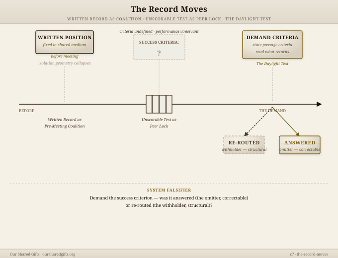

Boundary held in relationship, not contract. This page names the form of exchange — what's available, what's not, and how engagement works without creating debt on either side.
Most exchange creates accounting — who owes what, to whom, and when. This system is designed differently. The gift circuit closes on giving. What's offered is offered completely. No obligation is created by receiving it, using it, or building on it.
What makes this work: scarcity is real and named. Kevin's capacity is finite and visible. The system doesn't pretend otherwise. When something isn't available, the structure says so directly — not as a wall but as a coordinate.
The only options available here are zero or gain for everyone. There is no option that produces loss — not from visiting, not from using the patterns, not from reaching out and hearing no. Arriving here does not create an obligation to engage. Engaging does not create an obligation to pay. Leaving creates nothing.
An ask that carries all three parts becomes a circuit position, not a request. The third part — what you won't take — is what closes the obligation loop. Without it, the ask leaves the receiver holding the accounting.

If something here met your territory — use the three-part form. What you carry, what you need, what you won't take. That structure tells you both whether the exchange makes sense before anyone invests more than a sentence in it.
The patterns are open source — no ask required to use them. This door is for the cases where you need the person, not just the patterns.
Write to KevinTo put something in: Venmo @Kevin-Mears-11. You pick the number. Welcome, never required — it doesn't buy the work, and you don't owe it.